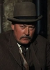
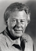

Country:United States, 89 minutes
Spoken languages:English
Genres:Horror
Director(s):Joy N. Houck Jr.
Writer(s):Joy N. Houck Jr., Robert A. Weaver
Video Codec:Unknown
Number: 1356


Certification:R
Storyline:
Wesley goes out on a killing spree while experiencing the nightmares of his brother, who was murdered 13 years ago.
Cast:  


Medium: Original DVD,
Comments: Part of: Witches & Demons Collection
Loaned: No
Aspect ratio: Unknown